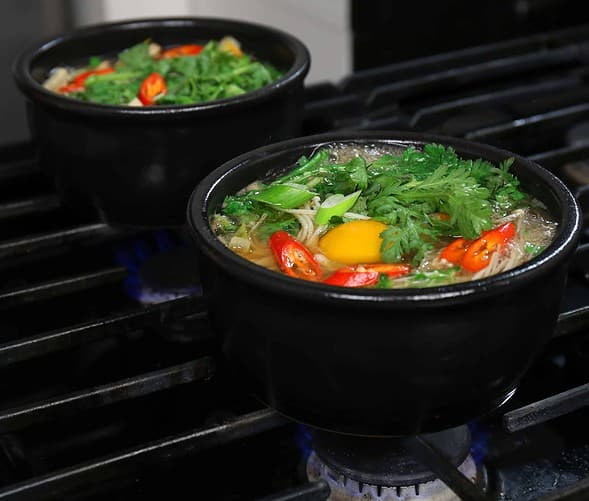

Bulgogi Stew in an Earthenware Pot
Ttukbaegi-bulgogi

image and recipe grabbed from www.maangchi.com
Description
Now that winter is almost here, I'm going to show you a hearty, delicious, meaty dish called ttukbaegi-bulgogi (뚝배기불고기) that's great for cold weather. It's a stew made with bulgogi (Korean marinated beef) cooked in a Korean earthenware pot (a ttukbaegi, also sometimes translated as a “stone bowl” in English). You might have had bulgogi cooked as BBQ on a grill at a Korean restaurant, but in ttukbaegi-bulgogi it's cooked and served in a stew in a sizzling hot traditional Korean eartheware pot.
Ingredients
- 8 ounces beef skirt steak (or tenderloin, any tender cuts of beef), sliced thinly
- 1 tablespoon soy sauce
- 2 garlic cloves, minced
- 2 teaspoons sugar
- 2 teaspoons honey
- ¼ teaspoon ground black pepper
- 1 teaspoon toasted sesame oil
- 1 ounce starch noodles (dangmyeon), soaked in cold water 30 minutes to 1 hour
- ½ teaspoon fish sauce
- ½ teaspoon kosher salt
- 1 ounce (¼ cup) onion, sliced
- 1 ounce (¼ cup) carrot, cut into matchsticks
- 2 ounces large green onion (or 2 green onions), sliced diagonally.
- 1 ounce (about ⅓ cup) Enoki mushrooms
- 1 ounce (about ½ cup) chrysanthemum greens (ssukgat), washed with the stems removed. If it’s not available, replace it with spinach or some basil leaves.
- 1 egg (optional)
- ¼ cup worth radish sprouts (optional)
- red chili pepper (optional), sliced thinly
Steps
- Combine soy sauce, garlic, sugar, honey, ground black pepper, and toasted sesame oil in a bowl. Mix it well until the sugar is dissolved. Add the beef and mix well to marinate. Cover and refrigerate.
- Place an earthenware pot (ttukbaegi) on the stove with 2 cups of water, kosher salt, and fish sauce. Bring to a boil.
- When it starts boiling, add the beef, onion, carrot, and the large green onion. Let it cook without the lid for about 10 to 12 minutes over high heat. Stir it a few times and remove any foam from the surface with a spoon.
- Add the noodles, stirring a few times, and cook for 1 minute. Add Enoki mushrooms and radish sprouts and cook for a few minutes. Crack an egg and put it in the center of the bubbling stew. Garnish with the chrysanthemum greens and the red chili pepper.
- Remove from the heat and serve with rice, kimchi, and a few more side dishes. If you want the spicy version, put some of the spicy mixture into the stew and mix it in.
Back to home